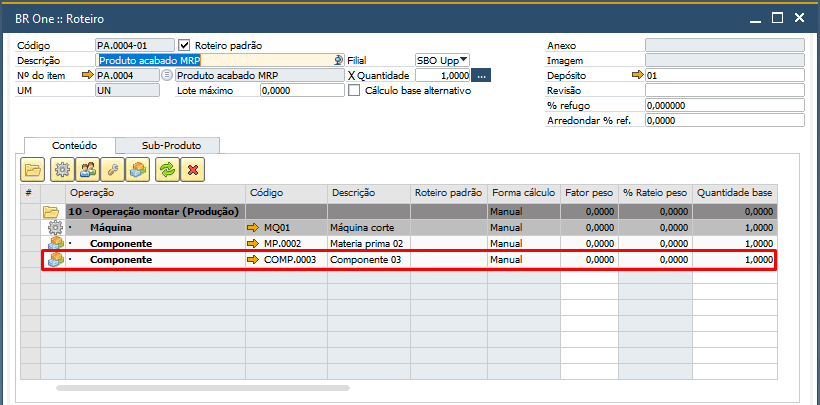

Manutenção de Roteiro
Para utilizar a funcionalidade de manutenção de roteiro é necessário ter autorização.
Localizada na tela Autorizações:
Administração -> Inicialização do sistema -> Autorizações -> Autorizações gerais, no caminho Autorização do usuário -> BR One Autorizações -> BR One Produção -> Manutenção de roteiros.
Se o usuário não tiver a autorização e tentar abrir a tela de manutenção, será exibida a seguinte tela:

Para que esta autorização funcione, é necessário que a opção “Desativar verificação de autorização do DI API”, localizada em: Geral > Desativar verificação de autorização do DI API, esteja configurada sem autorização.

Para acessar a tela de “BR One :: Manutenção de Roteiro” é necessário ir pelo menu:
Produção -> Manutenção -> Manutenção de Roteiro
O campo Tipo de manutenção possui as seguintes opções:

É necessário selecionar uma opção. Caso nenhuma seja selecionada e o usuário clicar em Filtrar, a seguinte mensagem será exibida:
BR One :: O campo ‘Tipo da manutenção’ deve ser preenchido.
Ao clicar em Filtrar para qualquer Tipo de manutenção, todas as linhas pertencentes ao roteiro serão exibidas. Da mesma forma, ao aplicar o filtro Roteiro De/Até, todos os roteiros serão apresentados.
Com duplo clique na coluna Selecionado, todas as linhas serão marcadas ou desmarcadas.
As seguintes colunas (quando exibidas) permitem ordenação, caso seja dado um duplo clique nelas:
Roteiro
Descrição roteiro
Item roteiro
Descrição item roteiro
Componente
Descrição componente
No campo Operação não serão exibidas operações do tipo externa.
Quando estiver processando cada um dos tipos de manutenção, serão exibidas as telas abaixo, recuperando os roteiros e atualizando cada roteiro:
Recuperando linha roteiro [x/x]
Atualizando roteiro [x/x]
Alterar componente
Para alterar um componente do roteiro, ele deve ser informado no campo Componente antes de filtrar. Caso não seja informado, a seguinte mensagem será exibida:
BR One :: Para alteração de componentes dos roteiros é obrigatório utilizar o filtro de componentes.
Apenas serão exibidos os componentes que estiverem nas linhas dos roteiros, e que não fazem parte de uma operação externa.
Quando selecionar um componente e filtrar, na área de “Novo componente”, o campo Forma de cálculo será preenchido automaticamente com o tipo de cálculo associado a esse componente. É importante notar que o componente que será alterado deve ser do mesmo tipo.
No CFL do Novo componente apenas serão carregados os itens que possuam a mesma Forma de cálculo e que sejam itens de estoque.
Ao clicar em Processar e não tiver nenhuma linha selecionada, a seguinte mensagem será exibida:
BR One :: Nenhuma linha selecionada.
Ao clicar em Processar e não tiver nenhum item informado no campo Novo componente, a seguinte mensagem será exibida:
BR One :: O campo “Novo componente” deve ser preenchido.
No exemplo abaixo, será trocado o componente MP.0001* que é do fator peso para o componente COMP.0004, que também é Fator peso do PA.
Ao clicar em Processar, a seguinte mensagem será exibida:
BR One :: O processo é irreversível. Continuar?
Ao clicar em Sim, as linhas selecionadas serão processadas e o log será aberto:

O componente MP.0001* foi substituido por COMP.0004, e suas quantidades permaneceram as mesmas.
Quando o parâmetro Cálculo automático de componente (Peso/Fator PA) das configurações de produção estiver desmarcado, apenas será exibido o campo de Novo componente para ser alterado.
Excluir componente
Para excluir um componente do roteiro, deve ser informado no campo Componente antes de filtrar. Caso não seja informado, a seguinte mensagem será exibida:
BR One :: Para exclusão de componentes dos roteiros é obrigatório utilizar o filtro de componentes.
Após informar o Componente, basta selecionar as linhas que deseja excluir e clicar em Processar.
No exemplo acima, será excluída a linha do componente COMP.0003 do roteiro.
Ao clicar em Processar e não tiver nenhuma linha selecionada, a seguinte mensagem será exibida:
BR One :: Nenhuma linha selecionada.
Caso tenha sido selecionada ao menos uma linha, a seguinte mensagem será exibida:
BR One :: O processo é irreversível. Continuar?
Ao clicar em Sim, as linhas selecionadas serão processadas e o log será aberto:
O componente COMP.0003 foi excluído do roteiro.
Quando o parâmetro Cálculo automático de componente (Peso/Fator PA) das configurações de produção estiver desmarcado, o campo Forma de cálculo não será exibido.
Incluir componente
Quando o tipo for Incluir componente, serão exibidos novos campos no lado direito, que serão utilizados para informar o novo componente.
Ao clicar em Filtrar sem ter informado nenhuma operação, a seguinte mensagem será exibida:

BR One :: Para Aleteração de componentes nos roteiros é obrigatório utilizar o filtro de operação.
Caso o usuário tente filtrar sem que o novo componente tenha sido informado, a seguinte mensagem será exibida:
BR One :: O campo “Novo componente” deve ser preenchido.
Após escolher uma operação, um novo componente e filtrar, poderá ser informada a quantidade, quantidade fixa e depósito.
Caso o usuário tente inserir uma quantidade menor ou igual a 0, a seguinte mensagem será exibida:

BR One :: O campo “Quantidade” deve ser maior que zero.
Caso o usuário tente inserir uma quantidade menor ou igual a 0 no campo Quantidade fixa, a seguinte mensagem será exibida:
BR One :: O campo “Quantidade fixa” deve ser maior ou igual a zero.
Se todos os campos estiverem corretos, ao aplicar, a seguinte mensagem será exibida:
BR One :: Valores aplicados nas linhas selecionadas.
Caso não tenha sido filtrado antes de aplicar, a seguinte mensagem será exibida:
BR One :: Nenhum registro para ser alterado.
Caso seja clicado em Aplicar e não tenha nenhuma linha selecionada, a seguinte mensagem será exibida:
BR One :: Nenhuma linha selecionada.
Caso o depósito selecionado seja de uma filial diferente da filial da linha selecionada, ao aplicar, a seguinte mensagem será exibida e o campo de depósito ficará em branco:

BR One :: A coluna “Depósito” das linhas que possuírem filial diferente do depósito selecionado não serão preenchidas.
Caso nas linhas, ao processar, a quantidade da linha selecionada seja menor ou igual a zero, a seguinte mensagem será exibida:

BR One :: O valor da coluna “Quantidade” deve ser maior que zero. [Roteiro: “x”]
Caso o campo quantidade fixa das linhas selecionadas esteja com um valor negativo, a seguinte mensagem será exibida:

BR One :: O valor da coluna “Quantidade fixa” deve ser maior ou igual a zero. [Roteiro: “x”]
No campo Depósito, serão exibidos apenas os depósitos da mesma filial da linha e que não sejam de envio direto. Caso o campo depósito das linhas selecionadas esteja vazio, a seguinte mensagem será exibida:

BR One :: A coluna “Depósito” deve ser preenchida. [Roteiro: “x”]
Caso o componente a ser incluído já exista na mesma operação do roteiro, a seguinte mensagem será exibida:

BR One :: O componente “x” já existe na operação “x”. [Roteiro “x”]
O método de baixa preenchido no roteiro para os componentes será recuperado no cadastro do item.
Quando o novo componente tiver a forma de cálculo Fator peso do PA, o campo Fator peso substituirá o campo Quantidade base, que será utilizado para cálculos do tipo Manual e Fator divisor.

Caso o novo componente tenha fator peso, e ao processar, a coluna Fator peso não tenha sido preenchida, a seguinte mensagem será exibida:

BR One :: O valor da coluna “Fator peso” deve ser maior que zero. [Roteiro: “x”]
Caso o novo componente tenha fator A/B/C, ou seja manual, ao processar, a coluna Quantidade base não tenha sido preenchida, a seguinte mensagem será exibida:

BR One :: O valor da coluna “Quantidade base” deve ser maior que zero. [Roteiro: “x”]
No exemplo abaixo, será incluído o item A3 no roteiro A1-01, operação 10 –Trefilação, com o fator peso, quantidade fixa e depósito informados:


Ao processar, caso tenha sido selecionada ao menos uma linha, a seguinte mensagem será exibida:

BR One :: O processo é irreversível. Continuar?
Ao clicar em Sim, as linhas selecionadas serão processadas e o log será aberto:

Ao ser incluído na linha, os cálculos do fator serão feitos automaticamente.

Confira os detalhes dos cálculos nos tópicos Cálculo manual, Cálculo Peso e Cálculo Fator A/B/C . EXEMPLO- ESCREVER—
Quando a configuração de cálculo automático não estiver ativa, o processo será o mesmo, porém, o campo Forma de cálculo e os campos referentes ao cálculo automático não serão exibidos:

-Alterar quantidade componente

Quando o tipo for Alterar quantidade componente, serão exibidos novos campos no lado direito, que serão utilizados para atualizar as quantidades e depósito das linhas. Apenas poderão ser selecionados depósitos que não sejam de envio direto.
Caso seja clicado em Filtrar sem ter informado nenhum componente, a seguinte mensagem será exibida:

BR One :: Para alteração de quantidade de componentes dos roteiros é obrigatório utilizar o filtro de componentes.
Ao filtrar, serão carregados todos os roteiros que tiverem o item na linha, e nos campos Quantidade base ou Fator peso, Quantidade fixa e Depósito serão carregados de acordo com os valores que estiverem no roteiro.


De acordo com a forma de cálculo do componente, serão exibidos os campos referentes à forma de cálculo, como Fator peso para forma de cálculo do tipo Fator peso do PA e Quantidade base para forma de cálculo do tipo Fator divisor A/B/C.

Após escolher um componente e filtrar, poderá ser informado novos valores para os campos quantidade, quantidade fixa e depósito.
Caso o usuário tente inserir uma quantidade menor ou igual a 0, a seguinte mensagem será exibida:
BR One :: O campo “Quantidade” deve ser maior que zero.
Caso o usuário tente inserir uma quantidade menor ou igual a 0 no campo Quantidade fixa, a seguinte mensagem será exibida:
BR One :: O campo “Quantidade fixa” deve ser maior ou igual a zero.
Caso não tenha sido filtrado antes de aplicar, a seguinte mensagem será exibida:
BR One :: Nenhum registro para ser alterado.
Caso seja clicado em Aplicar e não tenha nenhuma linha selecionada, a seguinte mensagem será exibida:
BR One :: Nenhuma linha selecionada.
Caso o depósito selecionado seja de uma filial diferente da filial da linha selecionada, ao aplicar, a seguinte mensagem será exibida e o campo de depósito ficará em branco:

BR One :: A coluna “Depósito” das linhas que possuírem filial diferente do depósito selecionado não serão preenchidas.
Caso nas linhas, ao processar, a quantidade da linha selecionada seja menor ou igual a zero, a seguinte mensagem será exibida:

BR One :: O valor da coluna “Quantidade” deve ser maior que zero. [Roteiro: “x”]
Caso o campo quantidade fixa das linhas selecionadas esteja com um valor negativo, a seguinte mensagem será exibida:

BR One :: O valor da coluna “Quantidade fixa” deve ser maior ou igual a zero. [Roteiro: “x”]
No campo Depósito, serão exibidos apenas os depósitos da mesma filial da linha e que não sejam de envio direto. Caso o campo depósito das linhas selecionadas esteja vazio, a seguinte mensagem será exibida:

{kind=link}
{kind=link}
{kind=link}
{kind=link}
{kind=link}
{kind=link}
{kind=link}
{kind=link}
{kind=link}
{kind=link}
{kind=link}
{kind=link}
{kind=link}
{kind=link}
{kind=link}
BR One :: A coluna “Depósito” deve ser preenchida. [Roteiro: “x”]
No exemplo abaixo, serão alteradas as quantidades do item A4 no roteiro A2-01.


Ao processar, caso tenha sido selecionada ao menos uma linha, a seguinte mensagem será exibida:

BR One :: O processo é irreversível. Continuar?
Ao clicar em Sim, as linhas selecionadas serão processadas e o log será aberto:

Ao ser incluído na linha, as quantidades serão alteradas e os cálculos do fator serão feitos automaticamente.
Confira os detalhes dos cálculos nos tópicos Cálculo manual, Cálculo Peso e Cálculo Fator A/B/C.
Quando a configuração de cálculo automático não estiver ativa, o processo será o mesmo, porém, o campo Forma de cálculo e os campos referentes ao cálculo automático não serão exibidos:

-Alterar fator peso componente

Quando o tipo for Alterar fator peso componente, serão exibidos novos campos no lado direito, que serão utilizados para atualizar o fator peso, quantidade fixa e depósito dos componentes que possuem a quantidade calculada pelo Peso do PA (“Forma de cálculo no roteiro” = “Fator Peso do PA”). Apenas poderão ser selecionados depósitos que não sejam de envio direto.
Ao clicar no botão Filtrar, serão recuperados todos os componentes que são calculados pelo “Fator Peso do PA” para todos os roteiros que estejam no filtro de roteiros “De/Para”, ou no filtro por grupo de item.
Exemplo: para a linha selecionada, os campos Fator peso e Quantidade fixa serão alterador para 2,50.

Ao clicar em Processar, a seguinte mensagem será exibida:

BR One :: O processo é irreversível. Continuar?
Ao clicar em Sim, o processamento será feito e as quantidades serão alteradas.


-Alterar peso item roteiro

Quando o tipo for Alterar peso item roteiro, serão exibidos novos campos no lado direito, que serão utilizados para atualizar o fator peso, quantidade fixa e depósito dos componentes que possuem a quantidade calculada pelo Peso do PA (“Forma de cálculo no roteiro” = “Fator Peso do PA”). Apenas poderão ser selecionados depósitos que não sejam de envio direto. Exemplo: para a linha selecionada, o campo Peso roteiro será alterado para 25,52.

Ao clicar em Processar, a seguinte mensagem será exibida:

BR One :: O processo é irreversível. Continuar?
Ao clicar em Sim, o processamento será feito e o peso será alterado no cadastro do item e na linha do roteiro.


-Alterar fator divisor A item roteiro

Quando o tipo for Alterar fator divisor A item roteiro, Os componentes que possuem o cálculo de quantidade pelos “Fatores Divisores do PA (A/B/C)” (“Forma de cálculo no roteiro” = “Fator Divisor A/B/C do PA”), terão suas quantidades alteradas.
Para alterar o fator divisor, nenhum filtro é necessário. Ao clicar no botão Filtrarserão recuperados todos os itens que possuem um roteiro padrão vinculado.
Exemplo: para a linha selecionada, o campo Fator divisor A será alterado para 12,32.

Ao clicar em Processar, a seguinte mensagem será exibida:

BR One :: O processo é irreversível. Continuar?
Ao clicar em Sim, o processamento será feito e o peso será alterado no cadastro do item e na linha do roteiro.


Alterar fator divisor B item roteiro
{kind=link}
Quando o tipo for Alterar fator divisor A item roteiro, Os componentes que possuem o cálculo de quantidade pelos “Fatores Divisores do PA (A/B/C)” (“Forma de cálculo no roteiro” = “Fator Divisor A/B/C do PA”, terão suas quantidades alteradas.
Para alterar o fator divisor, nenhum filtro é necessário. Ao clicar no botão Filtrarserão recuperados todos os itens que possuem um roteiro padrão vinculado.
Exemplo: para a linha selecionada, o campo Fator divisor A será alterado para 12,32.

Ao clicar em Processar, a seguinte mensagem será exibida:

BR One :: O processo é irreversível. Continuar?
Ao clicar em Sim, o processamento será feito e o peso será alterado no cadastro do item e na linha do roteiro.


Alterar fator divisor C item roteiro

Quando o tipo for Alterar fator divisor A item roteiro, Os componentes que possuem o cálculo de quantidade pelos “Fatores Divisores do PA (A/B/C)” (“Forma de cálculo no roteiro” = “Fator Divisor A/B/C do PA”, terão suas quantidades alteradas.
Para alterar o fator divisor, nenhum filtro é necessário. Ao clicar no botão Filtrarserão recuperados todos os itens que possuem um roteiro padrão vinculado.
Exemplo: para a linha selecionada, o campo Fator divisor A será alterado para 12,32.

Ao clicar em Processar, a seguinte mensagem será exibida:

BR One :: O processo é irreversível. Continuar?
Ao clicar em Sim, o processamento será feito e o peso será alterado no cadastro do item e na linha do roteiro.

BR One :: O processo é irreversível. Continuar?
Ao clicar em Sim, o processamento será feito e o peso será alterado no cadastro do item e na linha do roteiro.